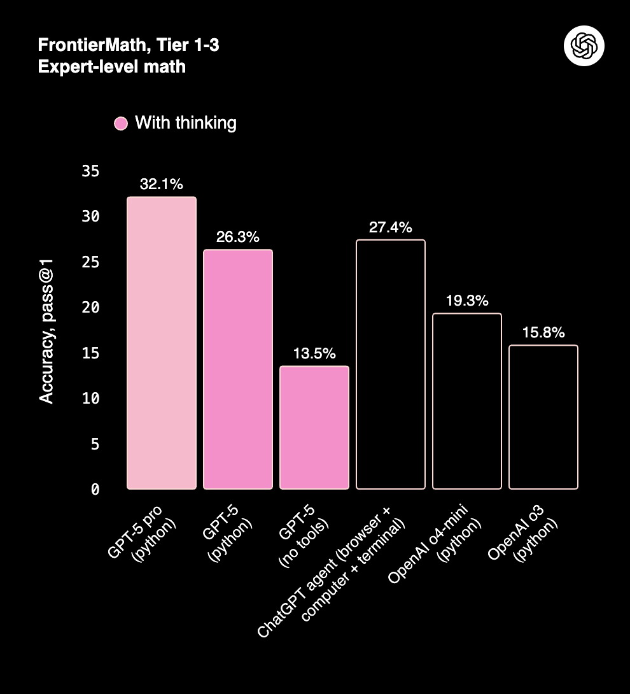
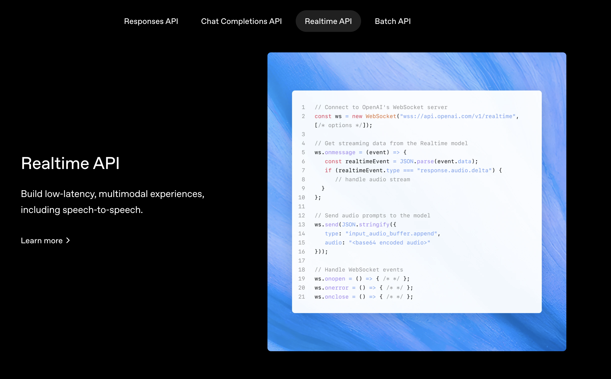

class: inverse, center, middle # GPT-5: The Complete Guide ## OpenAI's Latest Model Deep Dive ### Lucas Soares #### September 26, 2025 --- # Table of Contents -- **1. GPT-5 Overview & Release Timeline** -- **2. Model Comparison & Performance Benchmarks** -- **3. GPT-5 System Card & Architecture** -- **4. Router Architecture Deep Dive** -- **5. Preparedness Framework & Safety** -- **6. GPT-5 Prompting Guide Complete Breakdown** -- **7. New Parameters & Tools** -- **8. GPT-5 Coding Capabilities** -- **9. Building with GPT-5: API & Integration** -- **10. Demo: Personal GPT-5 Experiments** --- class: center, middle, section-title # GPT-5 Overview & Timeline --- # GPT-5 Release Timeline ## Key Dates & Milestones -- - **Launch Date**: August 7, 2025 -- - **Training Infrastructure**: Microsoft Azure AI supercomputers with NVIDIA H200 GPUs -- - **Availability Rollout**: - ChatGPT Free, Plus, Pro tiers ✅ - Team users ✅ - Enterprise and Edu (coming next) - OpenAI API ✅ -- - **Major Breakthrough**: First unified system combining reasoning, multimodal input, and task execution --- # GPT-5 Core Inovations -- - **Unified Architecture**: - Single system with multiple specialized models -- - **Smart Router**: - Automatically selects the best model for each task -- - **Reduced Hallucinations**: - 45% fewer factual errors than GPT-4o -- - **Enhanced Tool Use**: - Reliably chains dozens of tool calls -- - **Multimodal Excellence**: - Native text, image, audio, and video support --- class: center, middle, section-title <!-- ============================================= --> <!-- MODEL COMPARISON AND PERFORMANCE --> <!-- ============================================= --> # Model Comparison & Performance --- # GPT-5 SOTA in Artificial Analysis Intelligence Index <div style="text-align: center;"> </div> .footnote[Source: https://openai.com/index/introducing-gpt-5/] --- <div style="display: flex; justify-content: center; align-items: center; height: 70vh;"> <div style="display: flex; flex-direction: row; justify-content: center; align-items: center; width: 100%;"> <img src="../assets/aider-polyglot-multilang-code-editing-results.png" style="width: 50%; min-width: 180px; margin: 0 16px;"> <img src="../assets/aime-2025-competition-math-results.png" style="width: 83%; min-width: 180px; margin: 0 16px;">  </div> </div> .footnote[Source: https://openai.com/index/introducing-gpt-5/] --- <div style="display: flex; justify-content: center; align-items: center; height: 70vh;"> </div> .footnote[Source: https://openai.com/index/introducing-gpt-5/] --- <div style="display: flex; justify-content: center; align-items: center; height: 70vh;"> </div> .footnote[Source: https://openai.com/index/introducing-gpt-5/] --- <div style="display: flex; justify-content: center; align-items: center; height: 70vh;"> </div> .footnote[Source: https://openai.com/index/introducing-gpt-5/] --- <div style="display: flex; justify-content: center; align-items: center; height: 70vh;"> <img src="../assets/tau2-bench-function-calling-results.png" width="70%"> </div> .footnote[Source: https://openai.com/index/introducing-gpt-5/] --- <div style="display: flex; justify-content: center; align-items: center; height: 70vh;"> </div> .footnote[Source: https://openai.com/index/introducing-gpt-5/] --- <div style="display: flex; justify-content: center; align-items: center; height: 70vh;"> </div> .footnote[Source: https://openai.com/index/introducing-gpt-5/] --- <div style="display: flex; justify-content: center; align-items: center; height: 70vh;"> </div> .footnote[Source: https://openai.com/index/introducing-gpt-5/] --- # Overall Performance Summary -- **Mathematics**: 94.6% on AIME 2025 (without tools) -- **Coding**: 74.9% on SWE-bench Verified, 88% on Aider Polyglot -- **Multimodal**: 84.2% on MMMU understanding -- **Healthcare**: 46.2% on HealthBench Hard (vs 31.6% for OpenAI o3) -- **Agentic Capabilities**: - 74.9% on SWE-bench Verified (with thinking) - Performs amazingly on tasks related to instruction following and agentic tool use (e.g. BrowserComp) -- **Reduced Errors**: - 45% fewer factual errors than GPT-4o - With thinking mode: 80% fewer factual errors than OpenAI o3 --- class: center, middle, section-title # Ok, great the model does well on a lot of benchmarks, but what is new about it? --- class: center, middle, section-title # GPT-5 System Card --- # Notes on GPT-5's System Card -- **Real-time Router** - Intelligently decides which model to use - Based on conversation type, complexity, and tools needed --- <div style="display: flex; justify-content: center; align-items: center; height: 70vh;"> </div> --- <div style="display: flex; justify-content: center; align-items: center; height: 70vh;"> </div> --- <div style="display: flex; justify-content: center; align-items: center; height: 70vh;"> </div> --- <div style="display: flex; justify-content: center; align-items: center; height: 70vh;"> <img src="../assets/2025-09-25-16-33-18.png" width="400px"> </div> --- # Notes on GPT-5's System Card **Real-time Router** - Intelligently decides which model to use - Based on conversation type, complexity, and tools needed **Smart and Fast Model (gpt-5-main)** - Handles most everyday questions efficiently - Optimized for speed and general capability --- <div style="justify-content: center; align-items: center; height: 70vh;"> <p style="font-size: 14px; color: gray;">Kind of Good Output Token Speed for GPT-5 Mini & GPT-5 High</p> </div> --- <div style="justify-content: center; align-items: center; height: 70vh;"> <p style="font-size: 14px; color: gray;">Good End-to-End Response Time for GPT-5 Mini</p> </div> --- # Notes on GPT-5's System Card **Real-time Router** - Intelligently decides which model to use - Based on conversation type, complexity, and tools needed **Smart and Fast Model (gpt-5-main & gpt-5-mini)** - Handles most everyday questions efficiently - Optimized for speed and general capability **Deeper Reasoning Model (gpt-5-thinking)** - Tackles complex problems requiring deep thought - Produces long internal chains of reasoning - Can refine strategies and recognize mistakes --- # Safety Approach -- .pull-left[ ## Traditional Safety Approach - Binary refusal (allow/deny) - Overly cautious, often blocks helpful answers - Lacks nuance for complex or dual-use queries] .pull-right[ ## GPT-5 Safety-Helpfulness - Nuanced, context-aware responses - Balances safety with helpfulness - Enables more informative answers while respecting policy] .footnote[Source: https://cdn.openai.com/pdf/be60c07b-6bc2-4f54-bcee-4141e1d6c69a/gpt-5-safe_completions.pdf] --- # Key Benefits -- - **Maximizes helpfulness** while maintaining safety policy constraints -- - **Particularly effective** for dual-use cases (biology, cybersecurity) -- - **Nuanced responses** instead of blanket refusals -- - **Demonstrated improvements** in both safety and helpfulness .footnote[Source: https://cdn.openai.com/pdf/be60c07b-6bc2-4f54-bcee-4141e1d6c69a/gpt-5-safe_completions.pdf] --- <div style="display: flex; justify-content: center; align-items: center; height: 70vh;"> </div> .footnote[Source: https://openai.com/index/gpt-5-system-card/#:~:text=The%20safety-helpfulness%20optimization%20technique,are%20tuned%20to%20the%20system.] --- class: center, middle, section-title <h1> <span style="background-color: lightgreen"> Demo: My Initial Experiments with GPT-5 </span> </h1> --- # Interactive Learning Applications ## Real GPT-5 Projects -- ### **Educational Tools Built**: - [**Transformers Learning App**](https://chatgpt.com/canvas/shared/68950ffbb9f08191b4ed73a86e123119) - Interactive transformer architecture visualization - [**Embeddings Learning App**](https://chatgpt.com/canvas/shared/689512f7e6e4819199e1536602992bf5) - Hands-on embedding exploration - [**Basketball Coach App**](https://chatgpt.com/s/t_68951bd734b08191ae3b9002cd304413) - AI-powered sports coaching - [**iPad Drawing App**](https://chatgpt.com/canvas/shared/68953560217c8191a6360ebde7c1d693) - Touch-optimized creative tool --- # Advanced Web Applications ## Cutting-Edge Implementations -- ### **Interactive Experiences**: - [**Context Rot Paper → Interactive Experience**](https://chatgpt.com/canvas/shared/689527fc5eac8191ae7b0e1170e3bbb1) - Academic paper transformation - [**MediaPipe Music App**](https://chatgpt.com/share/6895403c-87b0-8004-a2b1-8a4fa09eab38) - Hand tracking music interface -- ### **Research Tools**: - [**Prompt Experiments**](https://chatgpt.com/share/68951e12-1d88-8004-8f36-3ef9965c43f8) - Python scripting and analysis - [**Semantic Reader App**](https://claude.ai/public/artifacts/ac58dc2c-1a4b-46db-93fc-3b282e61b045) - Claude comparison project --- # Observations: GPT-5 Limitations ## Honest Assessment -- ### **Intelligence Gaps Identified**: - [**Logic Problem Example**](https://chatgpt.com/share/6895186f-33c0-8004-82b6-d61fdc45d5f3) - Basic reasoning failure - [**Melting App Fail**](https://chatgpt.com/share/68953808-7b00-8004-8a0f-557ceb889375) - Physical simulation errors --- class: center, middle, section-title # Building with GPT-5: API & Integration --- <div style="text-align: center;margin-top: 70px;"> <p style="font-size: 14px; color: gray;"> <a href="https://openai.com/api/" target="_blank" style="color: gray; text-decoration: underline;">Responses API</a> </p> </div> --- <div style="text-align: center;margin-top: 70px;"> <p style="font-size: 14px; color: gray;"> <a href="https://openai.com/api/" target="_blank" style="color: gray; text-decoration: underline;">Chat Completions API</a> </p> </div> --- <div style="text-align: center;margin-top: 70px;">  <p style="font-size: 14px; color: gray;"> <a href="https://openai.com/api/" target="_blank" style="color: gray; text-decoration: underline;">Realtime API</a> </p> </div> --- <div style="text-align: center;margin-top: 70px;"> <p style="font-size: 14px; color: gray;"> <a href="https://openai.com/api/" target="_blank" style="color: gray; text-decoration: underline;">Batch API</a> </p> </div> --- # Supported Model Variants -- **gpt-5** (flagship model) - Maximum capability and performance - Best for complex reasoning tasks -- **gpt-5-mini** (cost-effective) - 83% cost reduction vs GPT-4 - Nearly half the latency - Excellent price-performance ratio -- **gpt-5-nano** (ultra-fast) - Optimized for speed - Lightweight tasks and high-throughput scenarios --- # GPT-5 Pricing Considerations ## Cost-Performance Analysis -- ### **Pricing Tiers**: - **GPT-5**: Premium pricing for maximum capability - **GPT-5-mini**: 83% cost reduction vs GPT-4 - **GPT-5-nano**: Ultra-low cost for high-throughput -- ### **Optimization Strategies**: - Use reasoning effort "minimal" for simple tasks - Leverage router system for automatic optimization - Choose appropriate model size for workload - Implement smart caching strategies --- class: center, middle, section-title <h1> <span style="background-color: lightgreen"> Demo: Getting Started with GPT-5 </span> </h1> --- class: center, middle, section-title # Q&A & Break --- class: center, middle, section-title # GPT-5 Prompting Guide Complete Breakdown --- <div style="display: flex; justify-content: center; align-items: center; height: 70vh;"> <img src="../assets/agentic-workflow-spectrum.png" width="80%"> </div> .footnote[Source: [GPT-5 Prompting Guide](https://cookbook.openai.com/examples/gpt-5/gpt-5_prompting_guide)] --- # Controlling Agentic Eagerness ## Less Agentic Eagerness -- **Reduce Context Gathering & Exploration:** ```python # Set reasoning_effort to lower reasoning_effort = "minimal" # Improves efficiency, reduces latency ``` -- **Specify Clear Exploration Criteria:** ```xml <context_gathering> Goal: Find the specific function definition Method: Search only in src/ directory Stop: When function is found or after 2 searches </context_gathering> ``` -- **Benefits:** - Faster response times - More predictable behavior - Lower token usage --- # Controlling Agentic Eagerness ## More Agentic Eagerness -- **Encourage Persistence:** ```xml <persistence> Continue exploring until the task is fully complete. Do not stop at partial solutions. Verify all edge cases before concluding. </persistence> ``` -- **Increase Reasoning Depth:** ```python reasoning_effort = "high" # Default is "medium" ``` -- **Tool Preambles for Progress Updates:** - Thorough descriptions of each step - Continuous user updates on task progress - Detailed explanations of decision-making --- # Performance Optimization Techniques ## Context Reuse & Efficiency -- ### **Leverage Previous Reasoning Traces** ```python # Reuse context from previous responses from openai import OpenAI client = OpenAI() response = client.responses.create( model="gpt-4o-mini", input="tell me a joke", ) print(response.output_text) second_response = client.responses.create( model="gpt-4o-mini", previous_response_id=response.id, input=[{"role": "user", "content": "explain why this is funny."}], ) print(second_response.output_text) ``` .footnote[Source: [OpenAI Responses API - Passing Context from the previous response](https://platform.openai.com/docs/guides/conversation-state#passing-context-from-the-previous-response)] --- # The Hidden Cost of Bad Prompts - GPT-5's stricter instruction following amplifies poor prompts -- - Contradictory instructions lead to inefficient Reasoning -- - Always resolve instruction hierarchy conflicts -- ### **Example: Resolving Conflicts** ``` ❌ "Be concise but provide detailed explanations" ✅ "Provide a 2-sentence summary, then detailed bullet points" ``` .footnote[Source: [GPT-5 Prompting Guide - Instruction Hierarchy](https://cookbook.openai.com/examples/gpt-5/gpt-5_prompting_guide#instruction-hierarchy)] --- # GPT-5 Coding Excellence ## Optimal Framework Stack -- .pull-left[ **Frontend Frameworks:** - Next.js (TypeScript) - React - HTML **Styling/UI:** - Tailwind CSS - shadcn/ui - Radix Themes ] .pull-right[ **Icons & Animation:** - Material Symbols - Heroicons, Lucide - Motion library **Typography:** - Sans Serif, Inter - Geist, Mona Sans - IBM Plex Sans, Manrope ] --- # Enhanced Code Generation Techniques ## Self-Reflection & Structured Guidance -- ### **Improve 0-1 Shot App Generation:** ```xml <self-reflection> Review the generated code for: - Component reusability - Error handling completeness - Performance optimizations Score each aspect 1-10 and explain improvements </self-reflection> ``` .footnote[Source: [GPT-5 Prompting Guide - Codebase Design](https://cookbook.openai.com/examples/gpt-5/gpt-5_prompting_guide#matching-codebase-design)] --- # Enhanced Code Generation Techniques ## Self-Reflection & Structured Guidance ### **Strict Design Standards Adherence:** ```xml <ui_ux_best_practices> - Visual Hierarchy: Limit typography to 4‚Äì5 font sizes and weights for consistent hierarchy; use `text-xs` for captions and annotations; avoid `text-xl` unless for hero or major headings. - Color Usage: Use 1 neutral base (e.g., `zinc`) and up to 2 accent colors. - Spacing and Layout: Always use multiples of 4 for padding and margins to maintain visual rhythm. Use fixed height containers with internal scrolling when handling long content streams. - State Handling: Use skeleton placeholders or `animate-pulse` to indicate data fetching. Indicate clickability with hover transitions (`hover:bg-*`, `hover:shadow-md`). - Accessibility: Use semantic HTML and ARIA roles where appropriate. Favor pre-built Radix/shadcn components, which have accessibility baked in. </ui_ux_best_practices> ``` .footnote[Source: [GPT-5 Prompting Guide - Codebase Design](https://cookbook.openai.com/examples/gpt-5/gpt-5_prompting_guide#matching-codebase-design)] --- # Recommended Prompting Patterns -- **1. Brief Thought Process Summary** ``` "Start your response with 2-3 bullet points summarizing your reasoning approach before the full answer" ``` -- **2. Thorough Tool-Calling Preambles** ``` "Before each tool use, explain: what you're doing, why, and what you expect to find" ``` -- **3. Disambiguated Tool Instructions** ``` "Search for 'class UserAuth' in authentication files only, stop after finding the implementation, not just imports" ``` -- **4. Planned Execution at Minimal Reasoning** ``` "First, outline your approach in 3 steps. Then execute each step completely before moving on." ``` --- # Markdown Formatting & Output Control ## Professional Output Formatting -- ### **Semantic Markdown Usage:** ```markdown Use Markdown **only where semantically correct**: - `inline code` for functions, variables - ```code fences``` for code blocks - Lists and tables for structured data - \( and \) for inline math - \[ and \] for block math ``` .footnote[Source: [GPT-5 Prompting Guide - Markdown](https://cookbook.openai.com/examples/gpt-5/gpt-5_prompting_guide#markdown-formatting)] --- # Metaprompting Techniques ## Teaching GPT-5 to Optimize Itself -- ### **The Metaprompt Pattern:** ```text When asked to optimize prompts, give answers from your own perspective - explain what specific phrases could be added to, or deleted from, this prompt to more consistently elicit the desired behavior or prevent the undesired behavior. Here's a prompt: [PROMPT] The desired behavior is: [DO DESIRED BEHAVIOR] But instead it: [DOES UNDESIRED BEHAVIOR] While keeping the existing prompt intact as much as possible, what minimal edits/additions would you make to encourage more consistent desired behavior? ``` .footnote[Source: [GPT-5 Prompting Guide - Metaprompting](https://cookbook.openai.com/examples/gpt-5/gpt-5_prompting_guide#metaprompting)] --- class: center, middle, section-title <h1> <span style="background-color: lightgreen"> Demo: Prompting Guide for GPT-5 - Hands-on </span> </h1> --- class: center, middle <h1> <span style="background-color: lightgreen"> Demo: Prompt Optimizer Tool </span> </h1> .footnote[Source: [Prompt Optimizer Tool](https://platform.openai.com/chat/edit?models=gpt-5&optimize=true)] --- class: center, middle # Q&A & Break --- class: center, middle # Developer Tool Integration ## Ecosystem Support .pull-left[ **GitHub Copilot**: - Available across all paid plans - VS Code, GitHub.com, GitHub Mobile - Enhanced multi-file changes/refactors **Cursor Feedback**: - "Smartest coding model we've used" - Optimized for interactive development ] .pull-right[ **Third-Party Tools**: - Windsurf integration - Codex CLI optimization - Fine-tuned for agentic coding **GPT-5 Codex**: - Specialized for software engineering - Real-world task training - Complex independent task handling ] --- # Real-World Developer Impact ## Transforming Software Development -- **Developer Testimonials**: "Best coding model in the world" -- **Automation Leap**: From 65% to 72% software engineering automation -- **Advanced Debugging**: - Catches deeply-hidden bugs - Runs complex multi-turn background agents - Sees problems through to completion -- **Complex Task Completion**: - Handles tasks where other models get stuck - Full project builds and large-scale refactors - Feature additions with architectural awareness --- class: center, middle <h1> <span style="background-color: lightgreen"> Demo: Building GPT-5 Powered Apps </span> </h1> ### Frontend Example from OpenAI Cookbook --- class: center, middle # Q&A & Break --- # Key Takeaways -- 1. **Revolutionary Architecture**: GPT-5's unified system with router intelligence represents a paradigm shift -- 2. **Safety Leadership**: Preparedness Framework and safe-completions training set new industry standards -- 3. **Developer Excellence**: State-of-the-art coding capabilities with 74.9% on SWE-bench -- 4. **Practical Innovation**: New parameters (verbosity, reasoning effort) provide unprecedented control -- 5. **Multimodal Integration**: Native support across text, image, audio, and video modalities -- 6. **Enterprise Ready**: Comprehensive API ecosystem with built-in tools and MCP integration --- # Next Steps & Resources ## Continue Your GPT-5 Journey ### **Official Documentation** - [GPT-5 System Card](https://openai.com/index/gpt-5-system-card/) - [GPT-5 Prompting Guide](https://cookbook.openai.com/examples/gpt-5/gpt-5_prompting_guide) - [OpenAI API Documentation](https://platform.openai.com/docs/overview) ### **Hands-on Practice** - [Prompt Optimizer Tool](https://platform.openai.com/chat/edit?models=gpt-5&optimize=true) - [GPT-5 Frontend Examples](https://cookbook.openai.com/examples/gpt-5/gpt-5_frontend) - [New Parameters Guide](https://cookbook.openai.com/examples/gpt-5/gpt-5_new_params_and_tools) --- # Thank You! ## Connect & Continue Learning ### **Course Materials** - üìö [GitHub Repository](https://github.com/your-repo-link) - üìã [Slides & Code Examples](presentation-link) ### **Stay Connected** - üê¶ Follow for updates on AI developments - üíº LinkedIn for professional discussions - üì∫ YouTube for more AI tutorials ### **Questions?** **Let's continue the conversation!** ---